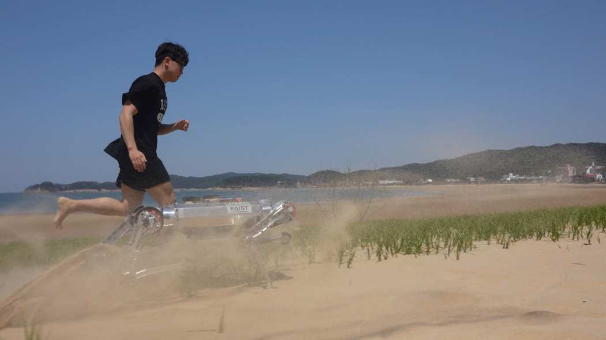

Jeong Hyun Lee Joshua
Robot & AI Researcher
M.S. student in the Railab at Kaist
I am a M.S. student in Graduate School of AI at KAIST, working as a member of the RAILAB, advised by Prof. Jemin Hwangbo
I am interested in autonomous driving over challenging outdoor environments.
I am also interested in
the control of quadrupedal robots.
News
| Jan 26, 2023 | 🎉 Opened my website! |
|---|---|
| Jan 26, 2023 | 📜 Our paper is published on Science Robotics! |
Education
| Mar, 2022 - Present |
Korea Advanced Institute
of Science and Technology (KAIST) , Daejeon, South Korea M.S. student in Graduate School of AI Advisor: Prof. Jemin Hwangbo |
|---|---|
| Mar, 2018 - Feb, 2022 |
Korea Advanced Institute
of Science and Technology (KAIST) , Daejeon, South Korea B.S. in Mechanical Engineering Advisor: Prof. Hae Won Park |
Experience
| Dec, 2020 - Feb, 2022 |
Robot and Artificial
Inteligence Lab (RAILAB), Daejeon, South Korea
Research Intern |
|---|
Publications
-
